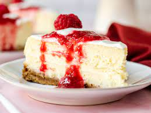

Cheesecake

Arguably one of the best desserts ever. It's an a tasty classic.
Making a cheesecake is an artform. The amount of time it takes to make adds to the already rich taste of the cheesecake.
Ingredients
For the Crust
- Cooking spray
- 9 graham crackers (1 sleeve), finely crushed
- 6 tbsp. butter, melted
- 1/4 c. granulated sugar
- Pinch kosher salt
For the filling
- 4 (8 oz) blocks of cream cheese, softened to room temperature
- 1 c. granulated sugar
- 3 large eggs
- 1 tsp. pure vanilla extract
- 1/4 c. sour cream
- 2 tbsp. all-purpose flour
- 1/4 tsp. kosher salt
Directions
- Preheat oven to 325° and grease an 8" or 9" springform pan with cooking spray. Make crust: In a large bowl, mix together graham cracker crumbs,
melted butter, sugar, and salt until totally combined. (Mixture should resemble wet sand.) Press into bottom and up sides of prepared pan. Set aside.
- In a large bowl using a hand mixer (or in the bowl of a stand mixer), beat cream cheese and sugar until no lumps remain.
Add eggs, one at a time, then stir in vanilla and sour cream. Add flour and salt and beat until just combined. Pour mixture over crust.
- Wrap bottom of pan in aluminum foil and place in a large roasting pan. Pour in enough boiling water to come up halfway in the baking pan.
- Bake until center of cheesecake only slightly jiggles, about 1 hour 30 minutes. Turn off heat, prop open oven door,
and let cheesecake cool in oven, 1 hour.
- Remove foil and refrigerate cheesecake until completely chilled, at least 5 hours and up to overnight.